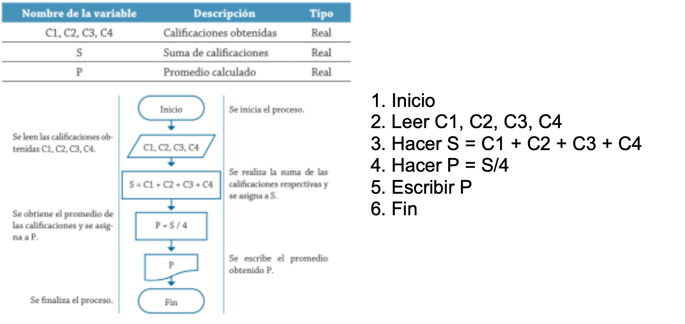

Variables en Java¶
Una variable es un espacio que utiliza un programa para almacenar información temporalmente en memoria. Cada variable tiene un nombre que permite identificarla y acceder al valor que contiene.
Por ejemplo, si queremos almacenar la edad de una persona podemos crear una variable llamada edad:
int edad = 18;
A partir de ese momento podemos utilizar el nombre de la variable para consultar su valor:
System.out.println(edad);
Salida:
18
No necesitamos conocer la posición concreta de memoria donde se encuentra almacenado ese valor. Java y la JVM se encargan de gestionar estos detalles.
Como su propio nombre indica, el contenido de una variable puede cambiar durante la ejecución del programa.
int edad = 18;
System.out.println(edad);
edad = 19;
System.out.println(edad);
Salida:
18
19
En este ejemplo seguimos teniendo una única variable llamada edad, pero su valor ha cambiado de 18 a 19.
Variable y valor no son lo mismo
Una variable es el elemento identificado mediante un nombre que utilizamos para almacenar información.
El valor es la información que contiene en un momento determinado.
int puntos = 10;
puntos = 25;
La variable continúa llamándose puntos, pero su valor ha cambiado.
Declaración de variables¶
Java es un lenguaje de tipado estático. Esto significa que cada variable tiene un tipo determinado y Java comprueba durante la compilación que los valores utilizados sean compatibles con ese tipo.
Para declarar una variable debemos indicar:
tipo nombreVariable;
Por ejemplo:
int edad;
double precio;
boolean aprobado;
char grupo;
En estas instrucciones hemos declarado las variables, pero todavía no les hemos asignado un valor.
Inicialización¶
La inicialización consiste en proporcionar el primer valor a una variable.
Podemos declarar primero la variable y asignarle posteriormente un valor:
int edad;
edad = 18;
También podemos declarar e inicializar la variable en una única instrucción:
int edad = 18;
Esta última forma será la más habitual.
Otros ejemplos:
int numeroAlumnos = 30;
double notaMedia = 7.5;
boolean aprobado = true;
char grupo = 'A';
String nombre = "Laura";
Declaración, inicialización y asignación
Conviene distinguir estos tres conceptos:
Declaración
int edad;
Creamos una variable llamada edad de tipo int.
Inicialización
edad = 18;
Le proporcionamos su primer valor.
Asignación
edad = 19;
Modificamos el valor almacenado anteriormente.
Tipo de dato de una variable¶
Cuando declaramos una variable debemos indicar qué tipo de información va a almacenar.
Por ejemplo:
int edad = 18;
double altura = 1.75;
boolean matriculado = true;
char grupo = 'A';
Java dispone de ocho tipos primitivos:
| Tipo | Ejemplo | Información almacenada |
|---|---|---|
byte |
byte edad = 18; |
Números enteros pequeños |
short |
short unidades = 1500; |
Números enteros |
int |
int alumnos = 30; |
Números enteros |
long |
long poblacion = 8000000000L; |
Números enteros grandes |
float |
float temperatura = 23.5F; |
Números decimales |
double |
double precio = 19.95; |
Números decimales |
char |
char grupo = 'A'; |
Un carácter |
boolean |
boolean aprobado = true; |
Valores true o false |
Los nombres de los tipos primitivos (int, double, boolean, etc.) son palabras reservadas de Java (keywords), por lo que no pueden utilizarse como nombres de variables.
Por ejemplo, esto es incorrecto:
int int = 10; // ERROR
String no es un tipo primitivo
Aunque lo utilizaremos constantemente:
String nombre = "Ana";
String no es uno de los ocho tipos primitivos ni una palabra reservada de Java.
String es una clase utilizada para representar cadenas de caracteres.
El tipo de una variable no puede cambiar¶
Una vez declarada una variable, su tipo queda establecido.
int edad = 18;
edad = 25; // Correcto
Pero no podemos almacenar posteriormente un dato incompatible:
int edad = 18;
edad = "Pedro"; // ERROR
La variable edad es de tipo int, por lo que debe almacenar valores compatibles con dicho tipo.
Declarar varias variables¶
Es posible declarar varias variables del mismo tipo en una única instrucción:
int edad, curso, numeroAlumnos;
También pueden inicializarse:
int x = 10, y = 20, z = 30;
Aunque Java lo permite, cuando las variables representan conceptos diferentes suele ser más legible declararlas por separado:
int edad = 18;
int curso = 1;
int numeroAlumnos = 30;
Reglas para nombrar variables¶
Los identificadores utilizados para nombrar variables deben cumplir determinadas reglas.
Reglas obligatorias¶
- No pueden comenzar por un número.
- Pueden comenzar por una letra,
_o$. - Después del primer carácter pueden contener letras, números,
_o$. - No pueden contener espacios.
- No pueden utilizar palabras reservadas de Java.
- Java diferencia entre mayúsculas y minúsculas.
Ejemplos válidos:
int edad;
int edadAlumno;
int alumno1;
int numeroAlumnos;
int _contador;
Ejemplos incorrectos:
int 1alumno; // Empieza por un número
int numero alumnos; // Contiene un espacio
int class; // class es una palabra reservada
int double; // double es una palabra reservada
Aunque $ puede utilizarse legalmente, no es recomendable utilizarlo en los nombres habituales de nuestras variables.
Java distingue mayúsculas y minúsculas¶
Java es case-sensitive, por lo que:
int edad = 18;
int Edad = 20;
int EDAD = 25;
son tres variables diferentes.
No es recomendable hacerlo porque dificulta la lectura del código.
Convenciones para nombrar variables¶
Además de las reglas obligatorias existen convenciones que permiten escribir código más legible.
Los nombres de las variables deben describir claramente qué información contienen.
Evita nombres como:
int x;
int dato;
int cosa;
int n1;
Cuando puedan utilizarse nombres más descriptivos:
int edadAlumno;
int numeroAlumnos;
double precioProducto;
double notaMedia;
boolean mayorDeEdad;
En Java se utiliza normalmente la convención lowerCamelCase para nombrar variables.
La primera palabra comienza en minúscula y las siguientes empiezan por mayúscula:
String nombre;
String nombreAlumno;
String nombreCompletoAlumno;
int numeroAlumnos;
double precioProducto;
boolean tieneDescuento;
Nombres descriptivos
Es preferible escribir:
double precioConIva;
en lugar de:
double p;
El código se escribe una vez, pero se lee muchas veces.
Visibilidad y vida de las variables¶
No todas las variables existen durante el mismo tiempo ni pueden utilizarse desde cualquier parte del programa.
Según el lugar donde se declaran podemos distinguir principalmente:
- Variables locales
- Variables de instancia
- Variables de clase o estáticas
Variables locales¶
Una variable local se declara dentro de un método, constructor o bloque de código.
public static void main(String[] args) {
int edad = 18;
System.out.println(edad);
}
En este caso edad es una variable local del método main().
Solo puede utilizarse dentro del ámbito en el que ha sido declarada.
public static void main(String[] args) {
int edad = 18;
if (edad >= 18) {
String mensaje = "Es mayor de edad";
System.out.println(edad); // Correcto
System.out.println(mensaje); // Correcto
}
System.out.println(edad); // Correcto
// System.out.println(mensaje); // ERROR
}
mensaje solamente existe dentro del bloque del if.
Las variables locales deben inicializarse
Java no permite utilizar una variable local antes de haberle asignado un valor.
int numero;
// System.out.println(numero); // ERROR
numero = 10;
System.out.println(numero); // Correcto
Variables de instancia¶
Las variables de instancia se declaran dentro de una clase pero fuera de sus métodos, constructores y bloques.
Representan características o propiedades de los objetos.
public class Alumno {
String nombre;
int edad;
double nota;
}
En este ejemplo:
nombre
edad
nota
son variables de instancia.
Cada objeto de la clase Alumno dispone de sus propios valores:
Alumno alumno1 = new Alumno();
Alumno alumno2 = new Alumno();
alumno1.nombre = "Ana";
alumno1.edad = 18;
alumno2.nombre = "Carlos";
alumno2.edad = 20;
Por tanto:
System.out.println(alumno1.nombre); // Ana
System.out.println(alumno2.nombre); // Carlos
Cada objeto mantiene su propio estado.
Variables de clase o estáticas¶
Una variable declarada utilizando static pertenece a la clase y no a cada objeto individual.
public class Alumno {
static int numeroAlumnos = 0;
String nombre;
int edad;
}
La variable:
static int numeroAlumnos;
es compartida por todos los objetos de la clase Alumno.
Normalmente se accede utilizando el nombre de la clase:
System.out.println(Alumno.numeroAlumnos);
Por ejemplo:
Alumno.numeroAlumnos = 25;
System.out.println(Alumno.numeroAlumnos);
Una variable static no es una variable global
En Java no existen variables globales en el mismo sentido que en algunos otros lenguajes.
Una variable static sigue perteneciendo a una clase, aunque exista una única copia compartida por todos sus objetos.
Diferencias principales¶
| Tipo de variable | Se declara | Pertenece a | Copias |
|---|---|---|---|
| Local | Dentro de un método o bloque | Al bloque donde se declara | Una durante cada ejecución |
| Instancia | En una clase, fuera de métodos | A cada objeto | Una por objeto |
static |
En una clase, fuera de métodos | A la clase | Una compartida |
Ejemplo:
public class Alumno {
// Variable de clase
static int numeroAlumnos = 0;
// Variables de instancia
String nombre;
int edad;
public void mostrarDatos() {
// Variable local
String mensaje = "Datos del alumno";
System.out.println(mensaje);
System.out.println(nombre);
System.out.println(edad);
}
}
Scope – Ámbito¶
El ámbito (scope) de una variable determina desde qué partes del código podemos utilizarla.
En las variables locales, su ámbito comienza en el punto donde se declaran y termina al finalizar el bloque { } que las contiene.
Por ejemplo:
Ejemplo de ámbito
public static void main(String[] args) {
int x = 5;
for (int i = 1; i <= 5; i++) {
int y = 10;
System.out.println(x); // Correcto
System.out.println(i); // Correcto
System.out.println(y); // Correcto
}
System.out.println(x); // Correcto
// System.out.println(i); // ERROR
// System.out.println(y); // ERROR
}
En este ejemplo:
xse declara dentro demain()y puede utilizarse desde su declaración hasta el final del método.ise declara en elfory solamente puede utilizarse dentro de dicho bucle.yse declara dentro del bloque{ }delfory solamente existe dentro de ese bloque.
Podemos representarlo de forma simplificada:
main {
x ────────────────────────────────┐
│
for (i) { │
i ───────────────┐ │
│ │
y ───────────────┤ │
│ │
} ← terminan i e y ──┘ │
│
} ← termina x ────────────────────────┘
Variables con el mismo nombre¶
No podemos declarar dos variables locales con el mismo nombre cuando sus ámbitos se solapan.
Esto produce un error:
public static void main(String[] args) {
int numero = 10;
if (numero > 0) {
// int numero = 20; // ERROR
System.out.println(numero);
}
}
La variable numero declarada al principio continúa estando dentro del ámbito cuando entramos en el if.
Sin embargo, dos métodos diferentes pueden tener variables locales con el mismo nombre:
public static void metodo1() {
int numero = 10;
}
public static void metodo2() {
int numero = 20;
}
No existe ningún conflicto porque cada variable pertenece al ámbito de su propio método.
Constantes¶
En ocasiones necesitamos almacenar un valor que no queremos que pueda modificarse durante la ejecución del programa.
Para ello Java proporciona la palabra reservada final.
final double PI = 3.141592;
Una vez asignado el valor, no puede modificarse:
final double PI = 3.141592;
// PI = 3.14; // ERROR
Otro ejemplo:
final int EDAD_MINIMA = 18;
int edad = 20;
if (edad >= EDAD_MINIMA) {
System.out.println("Puede acceder");
}
Por convención, los nombres de las constantes se escriben en mayúsculas, separando las palabras mediante _:
final int EDAD_MINIMA = 18;
final double PRECIO_BASE = 29.95;
final int MAXIMO_INTENTOS = 3;
Constantes de clase: static final¶
Es muy habitual que una constante pertenezca a toda la clase.
En ese caso se utilizan conjuntamente static y final:
public class Configuracion {
public static final double IVA = 0.21;
public static final int EDAD_MINIMA = 18;
public static final int MAXIMO_INTENTOS = 3;
}
Podemos utilizarlas mediante el nombre de la clase:
double precio = 100;
double impuestos = precio * Configuracion.IVA;
Resumen¶
Al estudiar variables en Java debemos diferenciar varios conceptos:
| Concepto | Pregunta que responde | Ejemplo |
|---|---|---|
| Tipo de dato | ¿Qué información almacena? | int, double, boolean, String |
| Nombre | ¿Cómo identificamos la variable? | edad, precioProducto |
| Valor | ¿Qué contiene actualmente? | 18, 29.95, true |
| Ámbito (scope) | ¿Desde dónde puedo utilizarla? | Método, if, for... |
| Tipo de variable | ¿A quién pertenece? | Local, instancia, static |
| Constante | ¿Puede cambiar su valor? | final int MAXIMO = 10; |
Por ejemplo:
public class Producto {
public static final double IVA = 0.21;
String nombre;
double precio;
public void mostrarPrecio() {
double impuestos = precio * IVA;
double precioFinal = precio + impuestos;
System.out.println("Producto: " + nombre);
System.out.println("Precio: " + precio);
System.out.println("IVA: " + impuestos);
System.out.println("Precio final: " + precioFinal);
}
}
En este código:
IVAes una constante de clase.nombrees una variable de instancia de tipoString.precioes una variable de instancia de tipodouble.impuestoses una variable local de tipodouble.precioFinales una variable local de tipodouble.- El ámbito de
impuestosyprecioFinalestá limitado al métodomostrarPrecio().
Actividades¶
-
AC 202 (RA1 / CE1e / IC1 / 3p) Escribe la declaración para cada una de las variables y asígnales un valor inicial en la propia declaración de variable.
- a. Variables enteras: p, q
- b. Variables float: x, y, z
- c. Variables carácter: a, b, c
- d. Variables double: raiz1, raiz2
- e. Variable entera larga: contador
- f. Variable entera corta: indicador
- g. Variable entera: índice
- h. Variables double: precio, precioFinal
- i. Variables carácter: car1, car2
- j. Variable tipo byte: valor
- k. Variables lógicas: primero, ultimo
- l. Variable de tipo cadena de caracteres: nombre
-
AC 203 (RA1 / CE1b CE1c CE1d CE1h / IC1 / 3p) Escribe la declaración más apropiada para cada una de las siguientes variables. El nombre de cada una indica el tipo de dato que contendrá y servirá para determinar el tipo de dato más adecuado en la declaración de la variable.
- a. edad
- b. códigoPostal
- c. altura
- d. genero (valores: H: hombre, M: mujer)
- e. nombre
- f. númeroDeHijos
- g. iva (valores: % a aplicar)
- h. tallaCamisa (valores numéricos)
- i. peso
- j. precio
- k. alumnoRepetidor (valores: SI/NO)
- l. mensaje
- m. letra
- n. mayorEdad
- o. minutos
- p. días
- q. matriculaCoche
- r. contador
- s. mayorDeEdad (valores:V/F)
- t. tallaCamiseta (valores: S, L, XL...)
-
PR 204 (RA1 / CE1b CE1c CE1h CE1i / IC2 / 5p) Escribe un programa que implemente el siguiente algoritmo descrito mediante diagrama de flujo y pseudocódigo.

